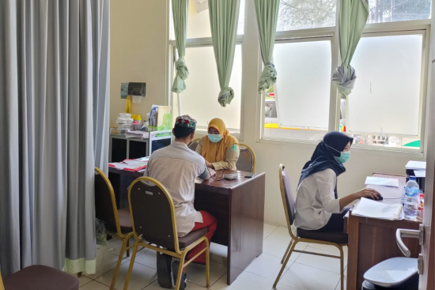
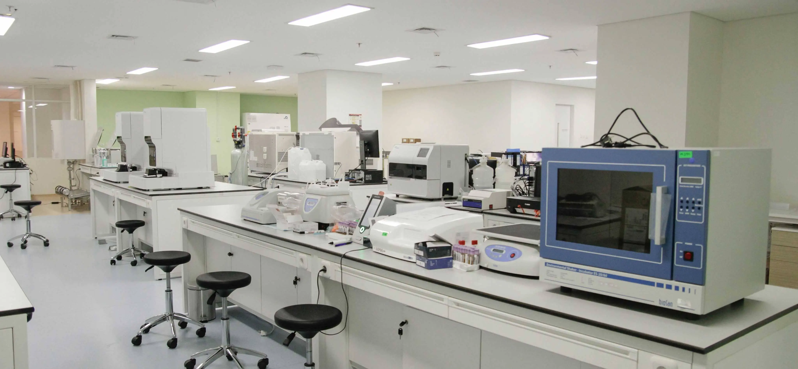
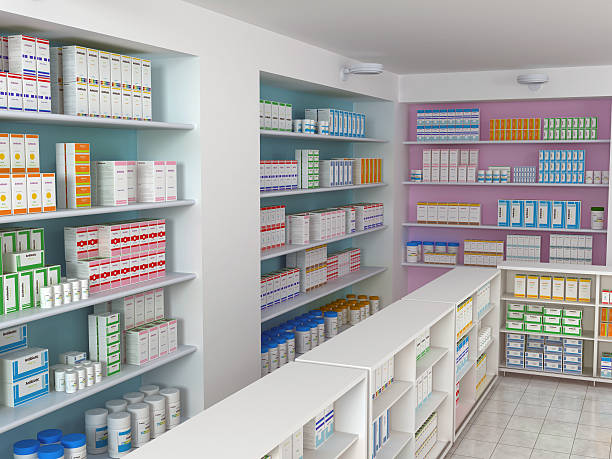
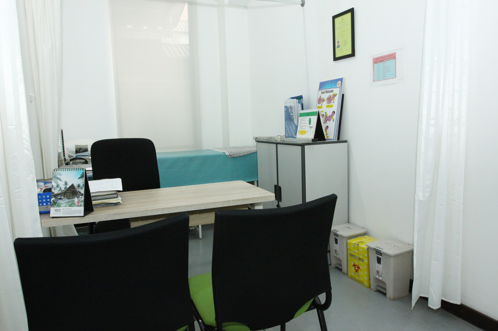

Dokumentasi Fasilitas dan Aktivitas Pelayanan Kesehatan
Berikut adalah galeri foto fasilitas medis, sarana penunjang rawat jalan, serta ragam kegiatan upaya kesehatan masyarakat yang diselenggarakan oleh Puskesmas Purwokerto demi menjaga derajat kesehatan warga.
Fasilitas Ruang dan Sarana Medis





Inventaris Fasilitas Penunjang Puskesmas
Rangkuman fasilitas fisik yang tersedia di gedung induk Puskesmas Purwokerto:
| Nama Fasilitas / Ruangan | Kapasitas / Jumlah Unit | Standar Kelayakan | Kondisi Operasional |
|---|---|---|---|
| Ruang Poli Pemeriksaan Umum | 2 Ruang (4 Meja Periksa) | Sesuai Permenkes No. 43/2019 | Sangat Baik & Beroperasi Penuh |
| Ruang Dental Gigi & Mulut | 1 Ruang (2 Dental Unit) | Sesuai Standar Persatuan Dokter Gigi | Sangat Baik & Beroperasi Penuh |
| Ruang Pelayanan KIA-KB | 1 Ruang (2 Ranjang Periksa) | Standar Kemenkes RI | Sangat Baik & Beroperasi Penuh |
| Laboratorium Patologi Dasar | 1 Ruang Analisis Lengkap | Akreditasi Laboratorium Faskes | Sangat Baik & Terkalibrasi Rutin |
| Instalasi Farmasi / Gudang Obat | 1 Unit Pelayanan + 1 Gudang Dingin | Sertifikasi BPOM & GPP | Sangat Baik & Suhu Terpantau |
| Mobil Ambulans Siaga | 2 Armada Mobil Ambulans Transport | Standar Ambulans Gawat Darurat | Siaga 24 Jam Penuh |
Dokumentasi Kegiatan Kesehatan Masyarakat (UKM)
- Posyandu Terintegrasi Balita dan Lansia: Pelaksanaan penimbangan serentak, pemberian makanan tambahan (PMT) bergizi lokal, dan imunisasi berkala di 12 RW binaan.
- Penyuluhan Pola Hidup Bersih dan Sehat (PHBS): Sosialisasi cuci tangan pakai sabun, gerakan bebas jentik nyamuk (PSN), dan pemilahan sampah medis rumah tangga di sekolah-sekolah dasar wilayah Purwokerto.
- Program Donor Darah Peduli Sesama: Kegiatan bakti donor darah sukarela bersama PMI Kabupaten Banyumas yang diadakan setiap triwulan.
- Senam Sehat Jantung Bugar: Aktivitas olahraga kebugaran jasmani bersama masyarakat umum lansia setiap Sabtu pagi pukul 06:30 WIB di halaman kantor puskesmas.
Tertarik bergabung atau mengikuti program edukasi kami? Hubungi bagian humas Puskesmas Purwokerto »